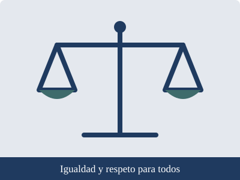

|
Autocuidado, prevención y derechos Proyecto Interdisciplinario · Luis Navarro · 2.º Técnico · Unidad Educativa San Esteban |
Inicio | Autocuidado | Prevención | Derechos | Fuentes confiables

Los derechos son garantías que corresponden a todas las personas por su condición humana. El Estado, la familia y la sociedad tienen la obligación de respetarlos y protegerlos. Los niños, niñas y adolescentes poseen, además, derechos específicos propios de su edad.
La Asamblea General de la ONU adoptó la Convención el 20 de noviembre de 1989. Según UNICEF, este tratado reconoce a niños, niñas y adolescentes como personas con derechos propios, y Ecuador fue el primer país de América Latina en ratificarlo. Se sustenta en cuatro principios:
Ejercer los propios derechos implica también respetar los de los demás. Ninguna persona debe ser excluida, humillada o maltratada por su origen, género, apariencia, condición económica, discapacidad o creencias. Ante una situación de discriminación o violencia, lo adecuado es comunicarla a un adulto de confianza o al DECE de la institución y, si hay una emergencia, llamar al ECU 911.
Elaborado por Luis Navarro · 2.º Técnico · Unidad Educativa San Esteban